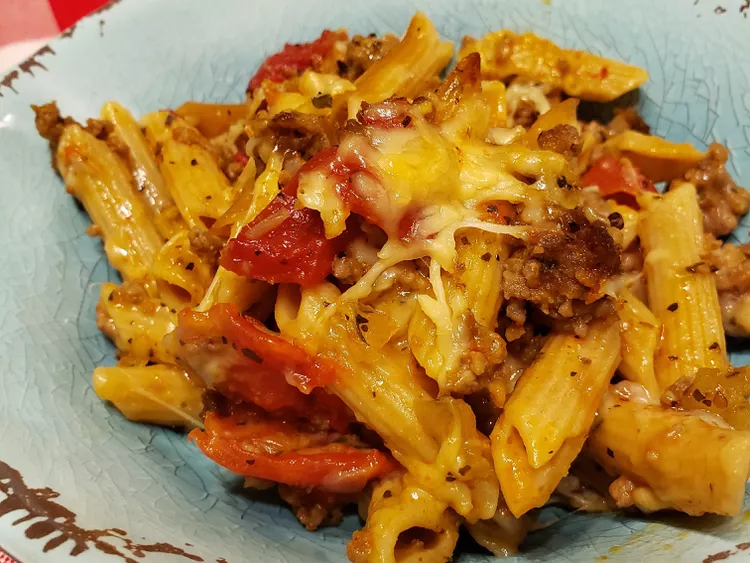

Lets make a tasty Baked Risatoni! An Italian Classic!

This baked rigatoni casserole, made with a flavorsome meat sauce loaded with Italian sausage, fresh herbs, and tomatoes, is a comforting cheesy baked pasta dish perfect for colder weather and always a crowd-pleaser!
Baked rigatoni is a comforting dish made by mixing cooked rigatoni pasta with a flavorful tomato-based meat sauce and plenty of melted cheese. The mixture is baked in the oven until the cheese is bubbly and golden, creating a hearty, satisfying meal.
Ingredients:
- 1 tablespoon olive oil
- 1 large onion, chopped
- 2 pounds mild Italian sausage links, casings removed
- 2 (28 ounce) cans Italian-style crushed tomatoes, undrained
- 2 cups water
- 3 tablespoons chopped fresh basil
- 1 tablespoon chopped fresh oregano
- 1 tablespoon chopped fresh parsley
- 1 ½ (16 ounce) packages rigatoni pasta
- 1 pound mozzarella cheese, shredded
- 1 ½ cups freshly shredded Parmesan cheese, divided
- Aluminum foil
Steps:
- Heat oil in a saucepan, cook onion until soft, add sausage, and cook until browned, then discard the grease.
- Add undrained tomatoes, water, and herbs, bring to a boil, reduce heat, and simmer for 25 minutes.
- Boil rigatoni until al dente, drain, and set aside.
- Preheat the oven to 350°F.
- Thicken the sauce, combine 2/3 with pasta, stir in mozzarella and Parmesan, then transfer to a baking dish, pour remaining sauce on top, and cover with foil.
- Bake for 25 minutes, uncover, sprinkle with Parmesan, and bake until golden, about 10 minutes.